Iconic Models of the Golden Age

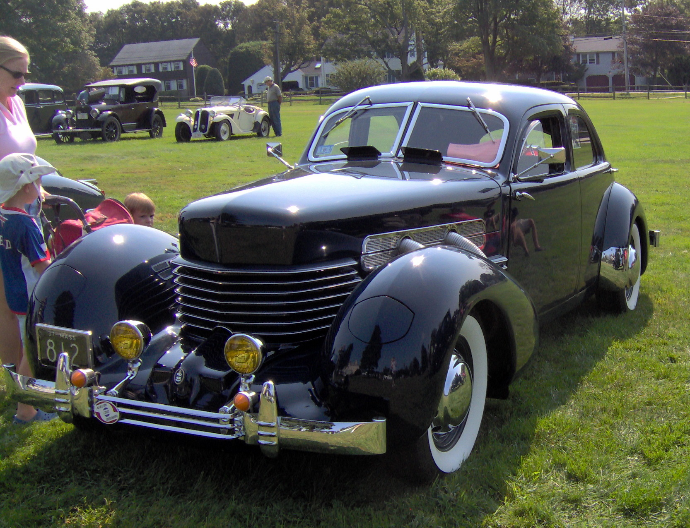


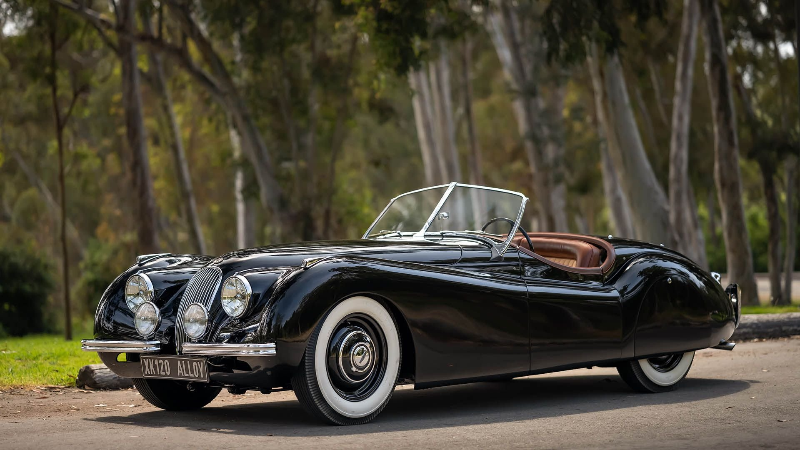
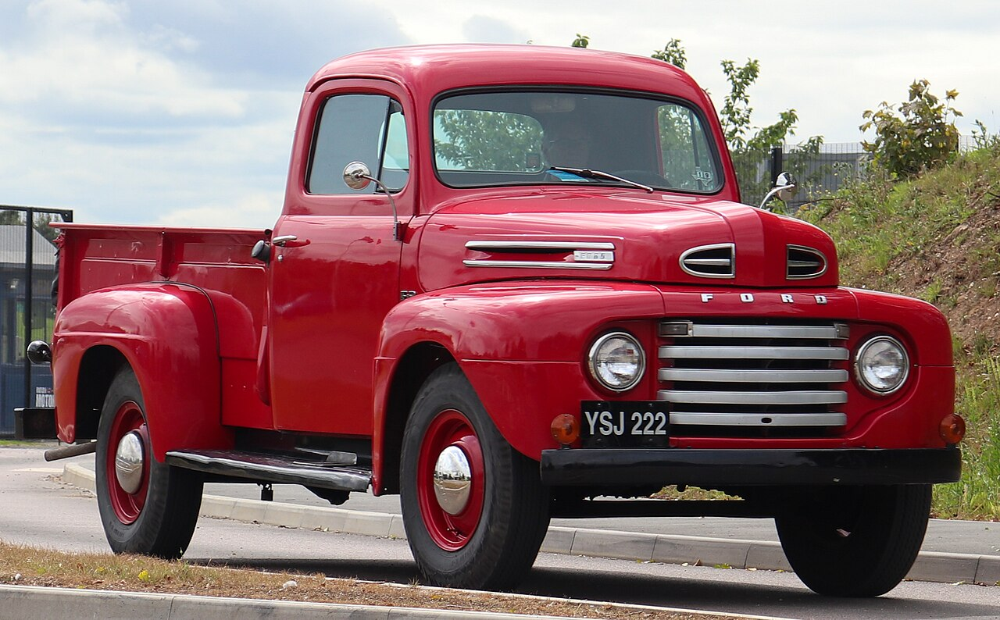
Style, luxury, and innovation between the wars
The period from 1920 to 1950 witnessed the automobile's transformation from basic transportation to an expression of art, luxury, and cultural identity. This golden age saw the rise of iconic brands, breathtaking designs, and innovations that would define cars for decades.
The 1920s, known as the "Roaring Twenties," brought unprecedented prosperity and style to automobiles. Art Deco influenced everything from grilles to dashboards. Luxury marques like Rolls-Royce, Bugatti, and Duesenberg created masterpieces on wheels. Meanwhile, Ford's Model T continued to dominate the affordable market, though it would eventually be replaced by the more modern Model A in 1927.
The Great Depression of the 1930s forced consolidation and innovation. Streamlining became the new design language, with cars inspired by aerodynamics. Chrysler's Airflow, though a commercial failure, pioneered monocoque construction and aerodynamic principles. European manufacturers like Mercedes-Benz and Auto Union dominated Grand Prix racing with revolutionary designs.
World War II halted civilian production as factories converted to military manufacturing. The war accelerated technological development, including improved engines, materials, and manufacturing techniques. When peace returned in 1945, a pent-up demand exploded, leading to the post-war boom that would define the 1950s.
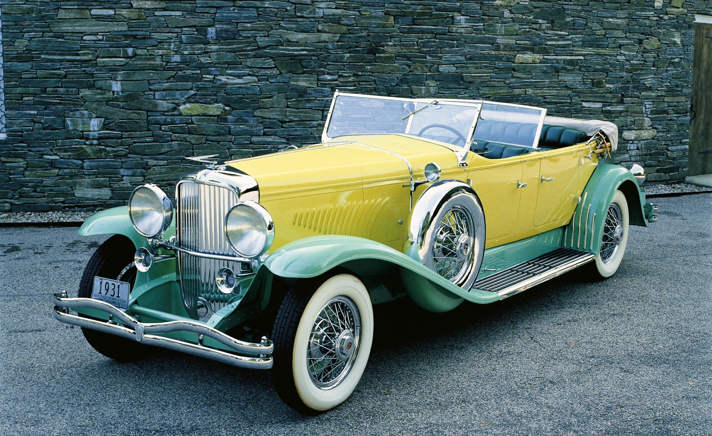
1930 Duesenberg Model J - The ultimate American luxury car
Lancia introduces the Lambda, the first car with monocoque construction (unibody) and independent front suspension, revolutionizing chassis design.
The Bugatti Type 35 is introduced, becoming the most successful racing car of all time with over 2,000 victories in its career.
After 15 years and 15 million units, the Model T is replaced by the more modern Model A with standard driver controls and choice of colors.
The Duesenberg Model J debuts with a 265 hp straight-8 engine, making it one of the most powerful and luxurious cars of its era.
Chrysler introduces the Airflow, the first mass-produced streamlined car. Though a commercial failure, it pioneers aerodynamic design and monocoque construction.
Citroën launches the Traction Avant, the world's first mass-produced front-wheel drive car with monocoque construction.
Ferdinand Porsche designs the Volkswagen Beetle (Type 1) under Hitler's "people's car" project. Production begins but is interrupted by war.
Civilian car production halts as factories convert to military production. The war accelerates advances in engines, materials, and manufacturing.
Car production resumes with pre-war designs. Enormous pent-up demand leads to a seller's market as Europe and America rebuild.
Jaguar unveils the XK120, the world's fastest production car at 120 mph, stunning the automotive world with its beauty and performance.
Enzo Ferrari builds the first Ferrari-badged car, the 125 S, launching one of the most legendary brands in automotive history.
Ford introduces the F-Series pickup truck, which would become the best-selling vehicle in America for decades to come.
The evolution of automotive styling 1920-1950
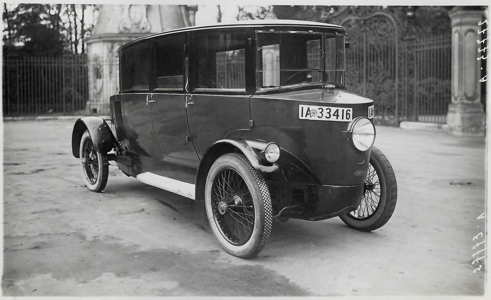
Early 1920s cars were upright, boxy, and functional - essentially motorized carriages. Separate fenders, headlights, and running boards were the norm.
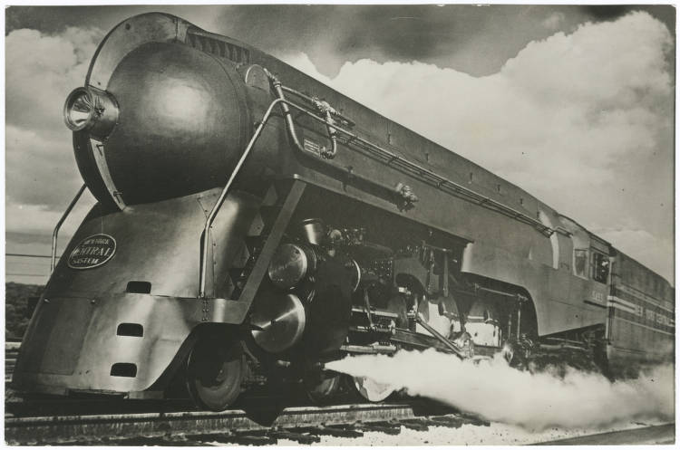
Aerodynamics influenced design with rounded shapes, integrated fenders, and sloping grilles. Art Deco details added elegance.
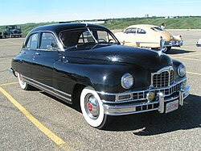
Post-war cars began integrating fenders into the body, creating the "ponton" style that would dominate the 1950s.
Headlights moved from separate pods to integrated into fenders
Rounded shapes, curved windshields, and aerodynamic grilles
Geometric patterns, chrome accents, and elegant curves
Closed cabins replaced open tourers as standard
Hand-crafted excellence from the golden age
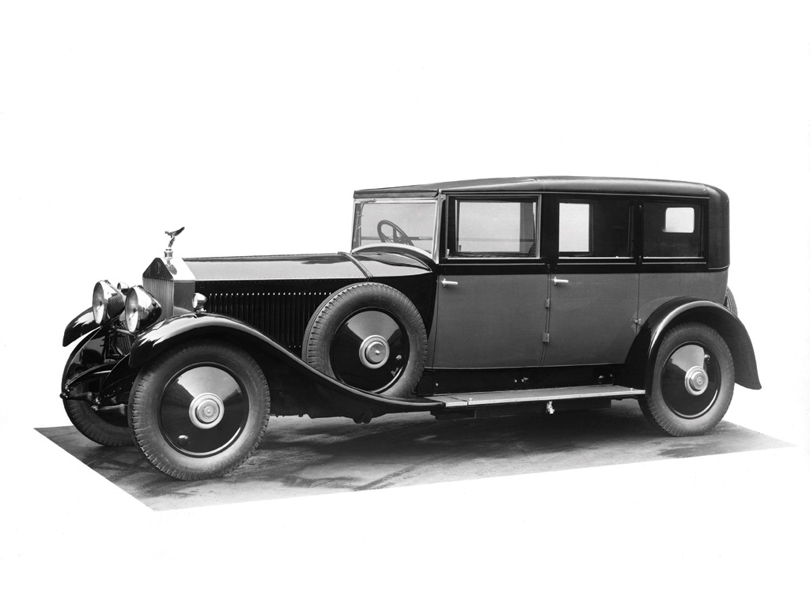
1925-1931
"The Best Car in the World" - Silent, smooth, and exquisitely crafted. Chassis were sent to independent coachbuilders for custom bodies.
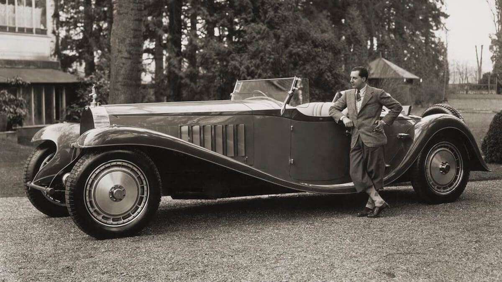
1927-1933
One of the largest and most luxurious cars ever built. Only 6 produced, with a 12.7-liter straight-8 engine. Priced at $30,000 in 1930.
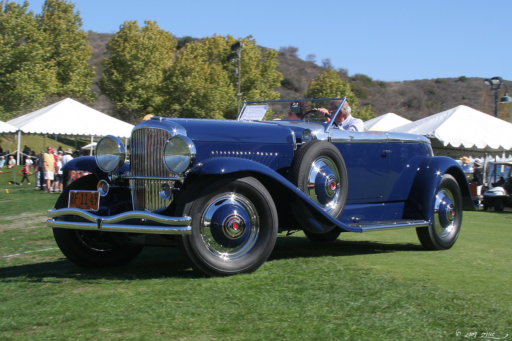
1928-1937
American luxury at its peak. The 265 hp straight-8 could reach 116 mph, making it one of the fastest cars of its era.
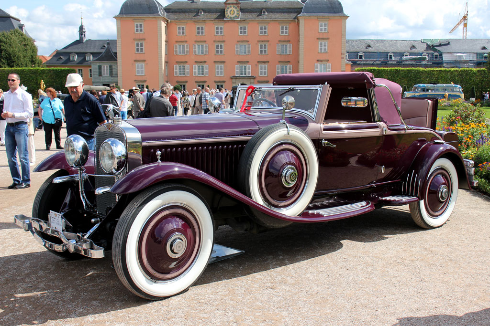
1919-1933
Spanish-French luxury with aircraft-inspired engineering. Features included servo-assisted brakes - a revolutionary safety feature.
"The Duesenberg is the only car that could race today and win the Indianapolis 500. Then drive to the country club and be the most elegant car in the parking lot."- Automotive historian
Lancia Lambda introduces unibody construction, eliminating the separate chassis and improving rigidity and weight.
Duesenberg pioneers hydraulic brakes, providing more powerful and balanced stopping power than mechanical systems.
Chrysler Airflow introduces wind tunnel-tested streamlining, though ahead of its time commercially.
Citroën Traction Avant brings front-wheel drive to mass production, improving traction and interior space.
Oldsmobile offers the first automatic transmission (Hydra-Matic), making driving easier for millions.
Packard offers the first factory-installed air conditioning, though it was rare and expensive.
When World War II ended in 1945, pent-up demand for cars exploded. Americans and Europeans who had gone years without new vehicles rushed to dealerships. Manufacturers, who had spent years building tanks and aircraft, quickly converted back to car production.
Initially, most post-war cars were slightly updated pre-war designs. But by the late 1940s, entirely new models appeared that would define the 1950s. The Jaguar XK120 stunned the world with its 120 mph capability. The Volkswagen Beetle began its long ascent to becoming the best-selling car of all time. Ferrari established itself as the ultimate sports car manufacturer.
The suburbs were growing, and families needed cars. This led to the development of station wagons and the first hardtop convertibles. By 1950, America had 26 million registered vehicles, and the automotive age was in full swing.
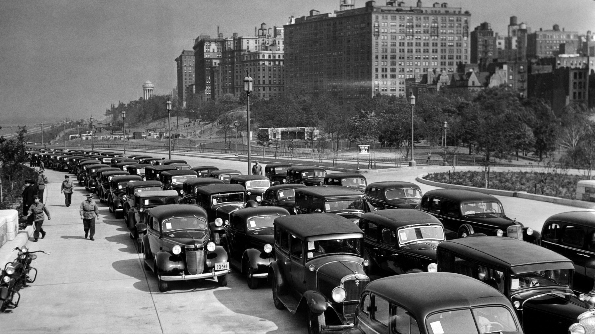


